今日の目標
DSプログラミング入門｜2026年度 秋学期
白濵 成希
今日は 90分の操作実習 です。
出典：マニュアル「授業用環境を準備しよう」「セットアップ完了の確認」／第1回資料／授業計画
全体の見取り図
| 使うもの | 今日の役割 |
|---|---|
| PowerShell | Windows側で導入・起動の指示を出す |
| WSL2・Ubuntu | Windowsの中でPython・Rを動かす |
| Windows版VS Code | Ubuntuに接続して作成・保存・実行する |
Python・Rは配布Ubuntuに入っています。
Windows側にPython・R・Anacondaなどを追加する手順ではありません。
出典：マニュアル「この授業で使うもの」
操作の流れ
| 初回だけ | 次回から毎回 |
|---|---|
| 配布ファイルを取得する | Start.cmd で開く |
| Windows・WSLを準備する | プログラムを書く・保存する |
Install.ps1 でUbuntuを取り込む |
タスク／Notebookの▶で実行する |
| VS Code接続・拡張機能を確認する | 保存して終了する |
毎回のインポートは不要です。
出典：マニュアル「初回だけ行うこと」「次の授業から行うこと」
ブラウザー｜大学アカウントのClassroom
| ファイル名 | 扱い |
|---|---|
DSProg2026-student.tar |
授業用Ubuntuの本体。手動では展開しない |
DSProg2026-setup.zip |
導入・起動用のファイル。すべて展開する |
出典：マニュアル「配布ファイルをダウンロードする」
ブラウザー｜Classroom
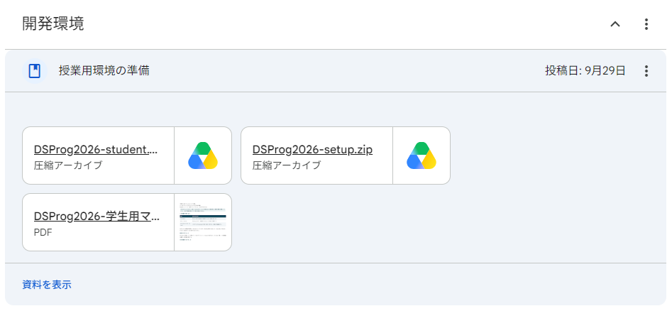
画像をクリックすると拡大できます。
出典：マニュアル「Classroomの授業用リンクから取得する」／ss-01
ブラウザー｜Classroom
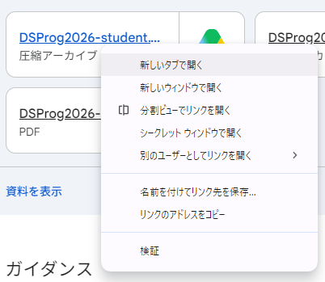
画像をクリックすると拡大できます。
出典：ss-02／マニュアル「Classroomの授業用リンクから取得する」
ブラウザー｜Google Drive
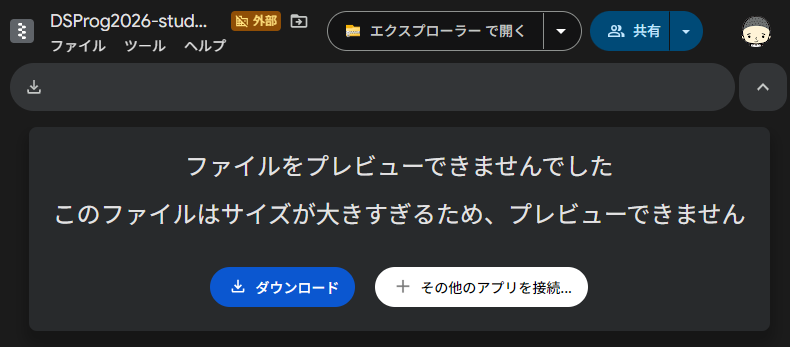
画像をクリックすると拡大できます。
この画面では、サイズが大きいためプレビューできないと表示されています。
出典：マニュアル「Classroomの授業用リンクから取得する」／ss-03
ブラウザー｜ダウンロードの確認画面
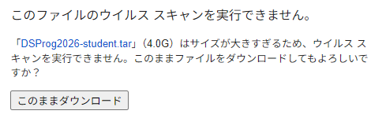
画像をクリックすると拡大できます。
DSProg2026-student.tar か確認します。「4.0G」は撮影時の表示です。必要空き容量とは異なります。
出典：ss-04／マニュアル「対象PCと準備」「配布ファイルをダウンロードする」
Windows｜エクスプローラー
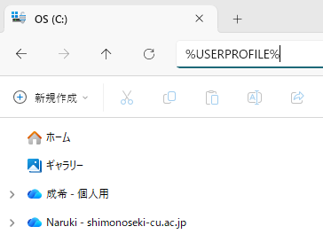
クリックで拡大し、細部を確認できます。
%USERPROFILE% を入力して Enter。DSProg2026-setup を作ります。検索欄やブラウザーではなく、エクスプローラーで操作します。
出典：マニュアル「Windows側に専用フォルダーを作る」／ss-05
Windows｜ダウンロードしたZIP
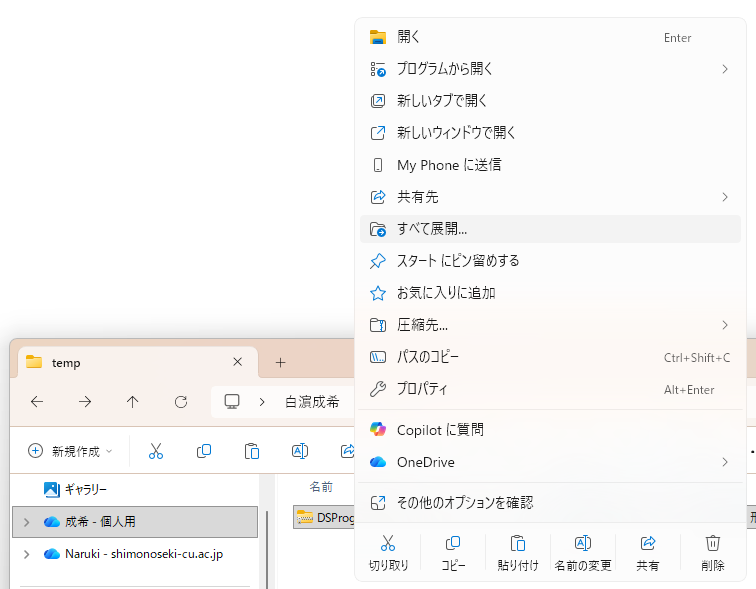
クリックで拡大し、細部を確認できます。
DSProg2026-setup.zip を探します。操作するのはZIPです。tarは展開しません。
出典：マニュアル「Windows側に専用フォルダーを作る」／ss-06
Windows｜ZIPの展開画面
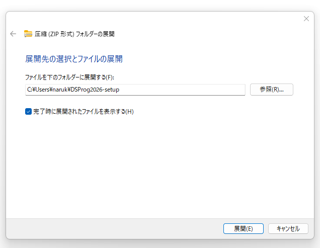
クリックで拡大し、細部を確認できます。
画像の C:\Users\naruk は撮影者の例です。
自分のユーザーフォルダー内の DSProg2026-setup を使います。
出典：マニュアル「Windows側に専用フォルダーを作る」／ss-07
Windows｜DSProg2026-setupフォルダー
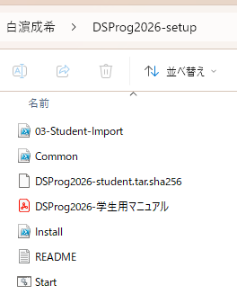
クリックで拡大し、細部を確認できます。
画像は tar移動前 の状態です。
.sha256 は照合用のファイルで、tar本体とは別です。
出典：マニュアル「Windows側に専用フォルダーを作る」「配置を確認する」／ss-08
Windows｜DSProg2026-setupフォルダー
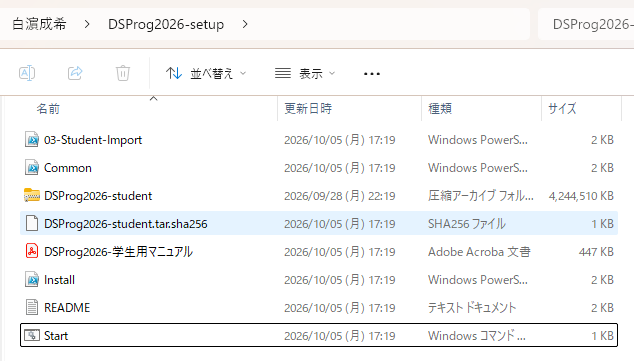
クリックで拡大し、細部を確認できます。
DSProg2026-setup/
Install.ps1
Start.cmd
03-Student-Import.ps1
Common.ps1
DSProg2026-student.tar
DSProg2026-student.tar.sha256
DSProg2026-学生用マニュアル.pdf
README.txt
出典：マニュアル「配置を確認する」／ss-09
Windows｜設定 → システム → バージョン情報
容量の目安はClassroomの案内を確認します。
出典：マニュアル「対象PCと準備」
Windows｜VS Code・普通のPowerShell
Windows版VS Codeを準備し、PATHに追加。PowerShellを開き直します。
MicrosoftのWSL拡張をWindows側へ：ms-vscode-remote.remote-wsl
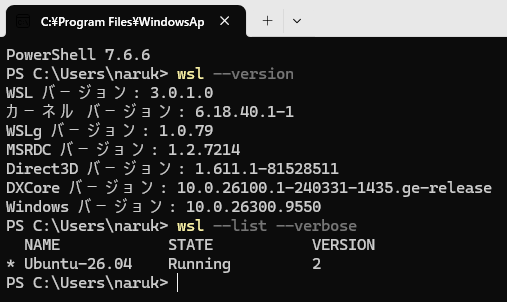
クリックで拡大し、細部を確認できます。
普通のPowerShellで1行ずつ実行：
wsl --version
wsl --list --verbose
画像の Ubuntu-26.04は既存環境の例。同じ名前やバージョン表示は不要です。
出典：マニュアル「Windowsを準備する」／ss-10
Windows｜管理者PowerShell → 再起動
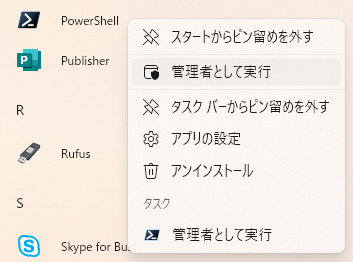
クリックで拡大し、細部を確認できます。
wsl --install --no-distribution
出典：マニュアル「WSL自体が未導入の場合だけ」／ss-11
Windows｜普通のPowerShell
管理者として実行しません。 自分のWindowsアカウントで操作します。
次の2行を、1行ずつコピーしてEnterを押します。
cd "$HOME\DSProg2026-setup"
powershell.exe -NoProfile -ExecutionPolicy Bypass -File .\Install.ps1
$HOME は自分のユーザーフォルダーです。名前の書き換えは不要です。
出典：マニュアル「普通のWindows PowerShellで実行する」
Windows｜Install.ps1の実行画面
スクリプトが順に行います。
出典：マニュアル「照合とインポートが終わるまで、画面を閉じない」
Install.ps1の案内｜パスワード入力
New password:
Retype new password:
入力中は文字も●も表示されません。
Ubuntuのユーザー名は全員 datasci。環境は各自のPCにあります。
出典：マニュアル「自分用のLinuxパスワードを設定する」
Windows｜Install.ps1の実行画面
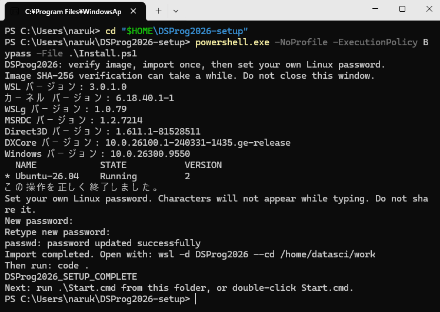
DSProg2026_SETUP_COMPLETE
出典：マニュアル「完了を確認する」／ss-12
Windows｜普通のPowerShell
wsl --list --verbose
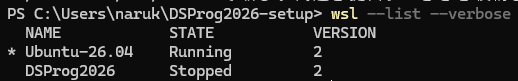
他のUbuntuは削除しません。画像はクリックで拡大できます。
出典：マニュアル「完了を確認する」／ss-13
Windows｜普通のPowerShell
cd "$HOME\DSProg2026-setup"
.\Start.cmd
Start.cmd をダブルクリックしても構いません。出典：マニュアル「起動用ファイルを実行する」「接続先とフォルダーを確認する」
VS Code｜左下・エクスプローラー
| 確認する場所 | 正しい状態 |
|---|---|
| 左下の接続先 | WSL: DSProg2026 |
| 左のエクスプローラー | work を開いている |
| フォルダーの場所 | /home/datasci/work |
信頼を尋ねられたら、教員配布のこのwork か確認して信頼します。
ホーム全体や、知らないフォルダーまで信頼する必要はありません。
出典：マニュアル「接続先とフォルダーを確認する」「信頼するか尋ねられたら」
VS Code｜拡張機能（WSL: DSProg2026）
検索欄へIDを1つずつ貼り付け、提供元も確認します。
| 拡張・提供元 | 検索するID |
|---|---|
| Python / Microsoft | ms-python.python |
| Pylance / Microsoft | ms-python.vscode-pylance |
| Jupyter / Microsoft | ms-toolsai.jupyter |
| R / REditorSupport | REditorSupport.r |
「WSL: DSProg2026にインストール」 があれば選びます。
出典：マニュアル「授業用WSLへ接続して、4つの拡張を確認する」
VS Code｜環境選択・画面表示
.venv/bin/python を選びます。メニューが見えない場合は、ウィンドウを最大化します。
出典：マニュアル「VS Codeの拡張機能を確認する」
VS Code｜workのエクスプローラー
| 場所 | 使い方 |
|---|---|
はじめに.md |
基本操作を確認する |
exercises/lesson01 |
今日作るPython・Rファイル |
notebooks |
Python・RのNotebook |
data |
読み込む授業用データ |
output |
グラフ・集計結果 |
work全体を開いたまま 操作します。
出典：マニュアル「学生が使う場所」「新規作成して保存する」
VS Code｜exercises/lesson01
lesson01 を右クリック → 「新しいファイル」→ ex01.py。print("こんにちは、Python!")
ex01.py のタブを選びます。出典：マニュアル「新しいPython・Rファイルを作る」
VS Code｜exercises/lesson01
lesson01 に ex01.R を作ります。print("こんにちは、R!")
ex01.R のタブを選びます。出典：マニュアル「新しいPython・Rファイルを作る」
VS Code｜ファイルのタブ・ターミナル
| ファイル | 実行方法 |
|---|---|
.py |
授業: Pythonファイルを実行 |
.R |
授業: Rファイルを実行 |
入力を求めるプログラムでは、ターミナルをクリックして入力します。
出典：マニュアル「保存したファイルを実行する」
VS Code｜notebooks
Notebook（.ipynb） は、説明・プログラム・結果を一緒に保存するファイルです。
.py・.R用の授業タスクは使いません。
ブラウザーのJupyterLabを先に起動する必要もありません。
出典：マニュアル「NotebookをVS Codeで実行する」
VS Code｜notebooks/hello_python.ipynb
hello_python.ipynb を開きます。Python (DSProg2026) と表示される場合もあります。
出典：マニュアル「Notebookを開く」「右上の『カーネルの選択』をクリックする」「セル横の『▶』をクリックする」
VS Code｜notebooks/hello_r.ipynb
hello_r.ipynb を開きます。R (DSProg2026) と表示される場合もあります。
RはPython Environmentsの中から探しません。
出典：マニュアル「右上の『カーネルの選択』をクリックする」「セル横の『▶』をクリックする」
VS Code｜Python・RのNotebook
実行順が分からなくなったら
カーネルを再起動 → 上から実行し直します。
途中のセルだけを動かすと、以前の変数が残っている場合があります。
出典：マニュアル「保存・再実行する」「セットアップ完了の確認」
Windows｜エクスプローラー → VS Code
Start.cmd で授業用VS Codeを開いておきます。\\wsl$\DSProg2026\home\datasci\work
出典：マニュアル「ダウンロードしたファイルをUbuntu側へコピーする」「作業場所を取り違えない」
Windows／Classroom｜提出・バックアップ
出典：マニュアル「提出とバックアップ」
VS Codeで終了 → Windowsから次回起動
今日の終了
保存 → 実行中の処理を終了 → VS Codeを閉じる。
次回の起動：普通のPowerShell
cd "$HOME\DSProg2026-setup"
.\Start.cmd
元のtarと初回設定用ファイルは、少なくとも導入確認まで保管します。
出典：マニュアル「授業を終えるとき」「起動用ファイルを実行する」
到達点の確認
| 段階 | 自分の画面で確認すること |
|---|---|
| ① 導入 | 完了表示／DSProg2026・VERSION 2 |
| ② 接続 | WSL: DSProg2026／work |
| ③ ファイル | Python・Rの保存、タスク実行、開き直し |
| ④ Notebook | 両言語のカーネル、文字・計算・日本語グラフ、保存 |
できた段階と、止まった操作を確認しておきましょう。
出典：マニュアル「セットアップ完了の確認」「困ったときは、ここを確認する」
相談するとき
どの段階で、何をしたら、どうなりましたか。
パスワード・Jupyterトークン・トークン付きURLは送らない。
この後の5枚は、必要になったときに参照する補足です。
出典：マニュアル「困ったときは、ここを確認する」「共有してよいもの・共有しないもの」
Windows｜画面を残して確認
| 症状 | 確認すること |
|---|---|
| Install.ps1が見つからない | ZIPの展開先・現在のフォルダー |
| Missing file: DSProg2026-student.tar | tarの配置・取得完了・名前の「(1)」 |
| SHA-256が一致しない | 正しい配布ファイルか。そのtarは使わない |
| Distribution already exists | 導入済み／取り込み途中の可能性。削除せず相談 |
| 仮想化・権限・容量のエラー | 画面を残して教員に相談 |
指定ハッシュを書き換えて通過させません。
出典：マニュアル「困ったときは、ここを確認する」
VS Code｜接続先・work・拡張機能
| 症状 | 確認すること |
|---|---|
| codeが見つからない | PowerShellを開き直す。PATH・接続メニューは教員と確認 |
| ターミナルが見えない | ウィンドウ最大化・省略メニュー |
| 授業用タスクがない | lesson01だけでなくwork全体を開いているか |
| カーネルがない | 授業用WSL接続・WSL側Jupyter・Jupyter Kernels |
| Notebookが実行できない | 授業用workか確認し、制限モードを確認 |
systemd user sessionの警告は相談。他のWSLの作業を勝手に停止しません。
出典：マニュアル「困ったときは、ここを確認する」
WindowsのPowerShell → Ubuntuの画面
① 普通のPowerShellで実行
wsl -d DSProg2026 --cd /home/datasci/work
② Ubuntuの画面に変わってから実行
code .
code と . の間に、半角の空白を入れます。
出典：マニュアル「起動用ファイルを使わない予備の方法」
VS Code｜新しいターミナル（Ubuntu側）
cd /home/datasci/work
uv run --locked jupyter lab
token=… まで含めてWindowsのブラウザーで開きます。出典：マニュアル「ブラウザーのJupyterLabは予備として使える」
必要になったときに参照
| 主な管理ファイル | 役割 |
|---|---|
.venv・pyproject.toml・uv.lock・.python-version |
Python環境・版の指定 |
renv・renv.lock |
R環境・版の記録 |
DESCRIPTION・r-packages.txt |
Rパッケージの一覧 |
.Rprofile・.Renviron |
R起動時の設定 |
.vscode・.gitignore |
表示・タスク・変更管理の設定 |
通常は非表示です。教員の指示なしに移動・編集しません。
詳しい手順と公式資料[1]〜[12]：学生用マニュアル末尾。
出典：マニュアル「非表示になっている主な管理ファイル」「参考資料と、この手順の対象」